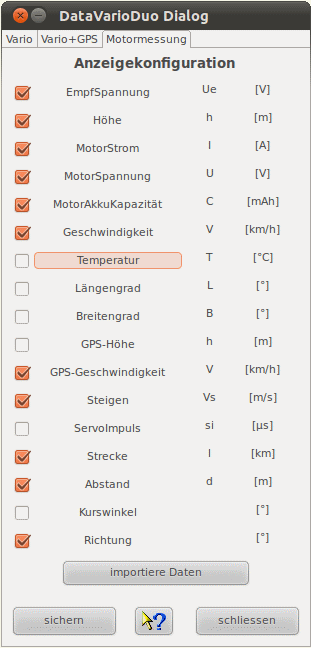
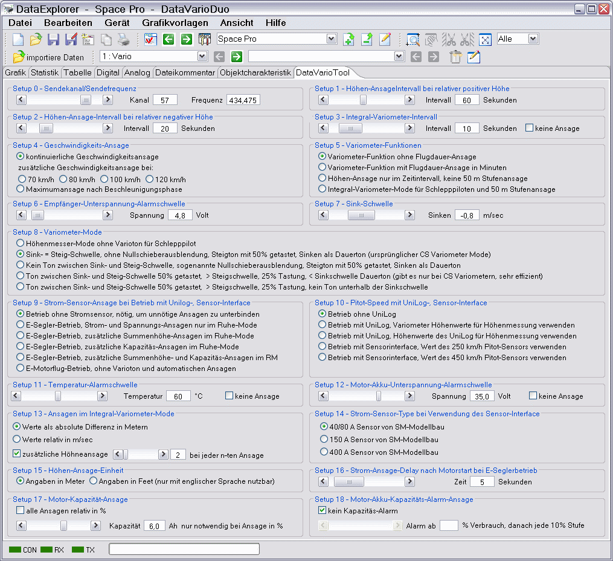
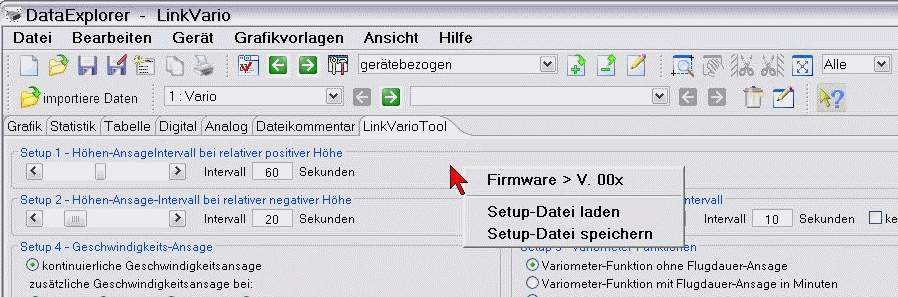

Der gezeigte Gerätedialog dient zur Konfiguration der Anzeige der ausgelesenen Daten. Über einen Dateiauswahldialog, erreichbar über "importiere Daten", können auch neue Dateien Eingelesen werden.

Hinweis: Ist die Anzeige erst einmal konfiguriert, wird diese Anzeigekonfiguration auch angewendet, wenn über die Toolbar eine Konfiguration ausgewählt wurde und über "importiere Daten" der Dateidialog geöffnet und eine oder mehrere Dateien eingelesen werden.
Über das Dateimenü -> Export können GPS basierte Daten, soweit vorhanden, in dem Google Earth KMZ Datenformat exportiert werden. Nähere Beschreibung dazu siehe Toolbar -> Google Earth.
Dieses Geräteplug-in enthält die Besonderheit eines zusätzlichen Tabulators im Hauptfenster. Hiermit wird die gerätespezifische Anwendung zur Erstellung der Gerätesetupdatei abgebildet und steht dadurch für alle, durch diese Anwendung unterstützen Betriebssysteme, zur Verfügung. Der Tabulator wird automatisch beim Umschalten auf das Gerät angelegt, bzw. geschlossen. Als Beispiel sei hier der Tabulator für das LinkVario gezeigt. Der Tabulatorinhalt ist für das DataVario ist entsprechend angepasst.

Das Laden bzw. Speichern der Setup- oder Konfigurations-Datei geschieht über das Kontextmenü.
